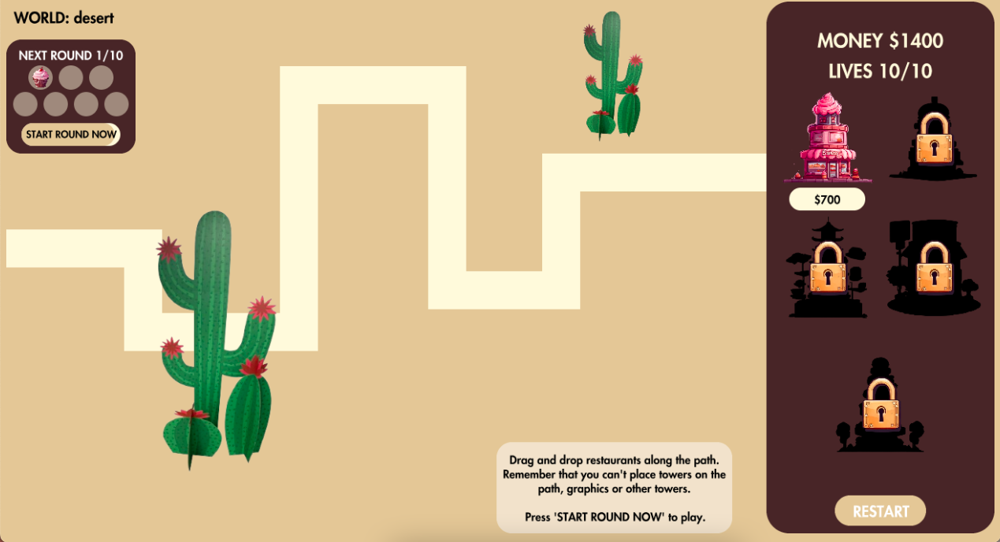
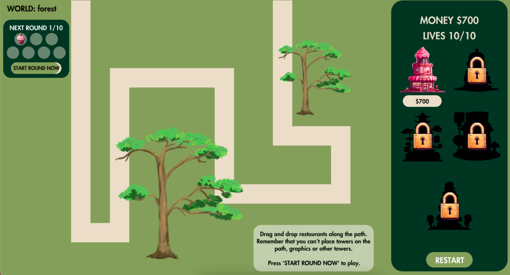
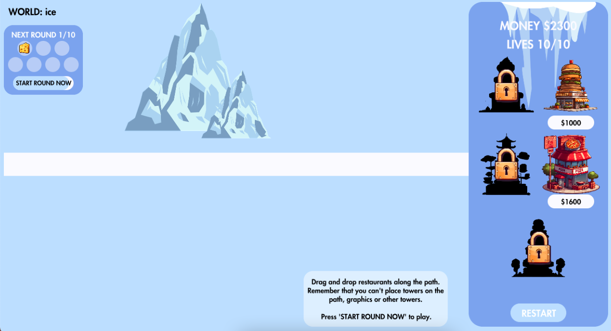
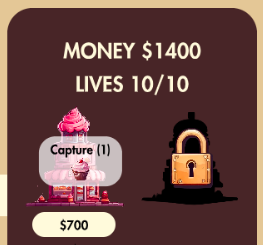
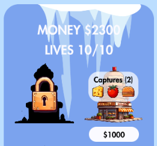
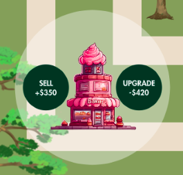
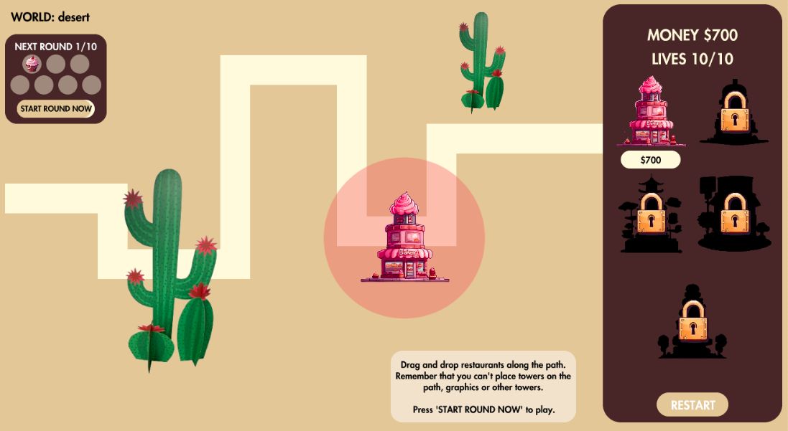
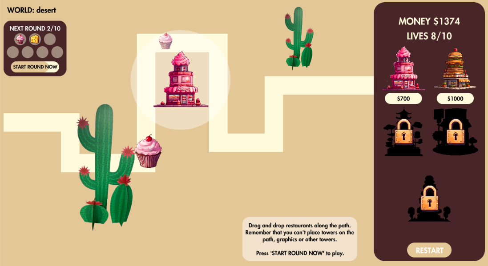
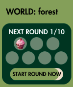
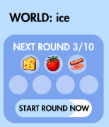

Note: Please play with console CLOSED!
Food Tower Defense game is a variation of Bloons Tower Defense Game where the objective is to capture all of the ingredients.
There are three different worlds, desert, forest and ice, and a player chooses a world to start. Each world is constructed with different maps, graphics and starts with various amounts of money, towers and ingredients.
  Different types of towers will capture different types of ingredients. This is specified when the player hovers over a tower in the control panel on the right. The number of ingredients a tower can capture is shown in "()".
 Players can also upgrade or sell purchased towers by clicking on a purchased tower. An update means that the tower's target area increases. The player can only update each tower once.
Players are expected to drag and drop towers strategically along the path. Please note that a tower cannot be placed on the path, obstacles, or another tower. The circle around the tower is the tower's target area which indicates in what area the tower can capture ingredients. The target area turns red if the player tries to place the tower in an unallowed location. Players might need to click again to drop the tower at an allowed place.
 Each world has 10 waves of ingredients. A countdown timer is associated with each wave, and the user has the ability to call the wave before the timer is up and get some bonus coins. The ingredients that might appear in the next wave will be displayed in the timer as well so that the user can plan ahead. Each wave introduces new ingredients, and/or towers or increases the speed of the ingredients.
 Have fun and try to win all the worlds!
Drag and Drop Mechanism - Daniel Shiffman Draggable Class by codingtrain
Font - Fontsgeek Futura Heavy
Collect Ingredient Sound - Freesound Item or Material Pickup Pop 3 out of 3
Purchase Sound - Mixkit Winning a coin, video game
Game Over Sound - Mixkit Arcade space shooter dead notification
Upgrade Sound - Mixkit Arcade video game bonus
Level Won Sound - Mixkit Casino bling achievement
Button Sound - Pixabay Punch 1
Start Round Sound - Pixabay Punch 3
Background Music - Pixabay Cruising down 8bit lane
Sell Sound - Pixabay Coin donation 2
Cactus Image - Amazon Cardboard People Cactus Grouping
Mountain Image - Pixabay Everest Mountain Snow
Icicle Image - Pngtree Icicles With Snow Winter Decoration
Tree Image - Pngtree Beautiful Tree 2d Type 26
All the towers and ingredients had been generated through Canva's Free Online Image AI Generator by using keywords such as "pixelated", "old school" and "2D".